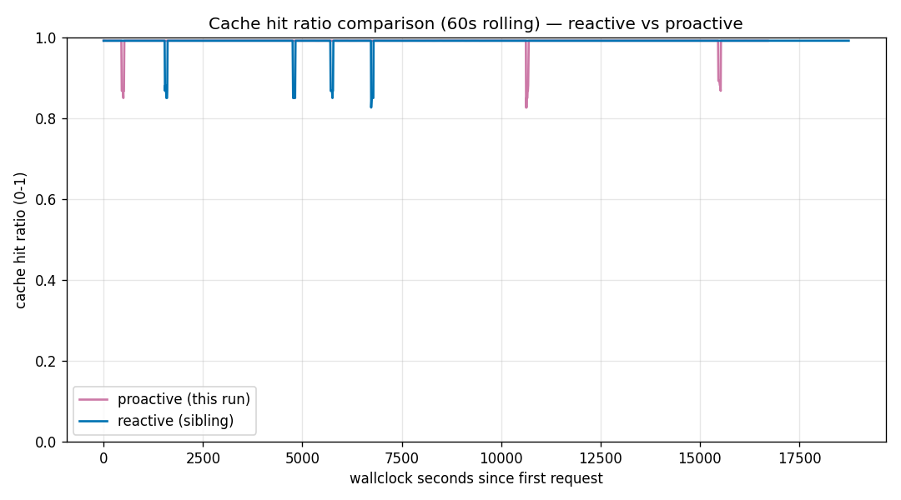

实验笔记 · exp004 · 用按量付费(PAYG)调用模拟 PTU 溢出(Phase 1) · 聪明策略有没有值回成本
exp004 — 提前溢出的策略值不值
作者 Hyeonsang Jeon · Global Black Belt, Cloud & AI Apps
前三个基准都在问一件事：推理强度这只旋钮该拧到哪里。这一次轴线换了，不是模型，而是部署。本实验模拟 PTU(预置容量)部署接近饱和的状态。两种溢出策略各把一部分流量导到备用路径，放到同一段负载下对打。
我们提前写下预测：盯着 p95 延迟上升、在问题真正出现前就动作的 proactive，会比等到超时或 429 之后才转移的 reactive 更少损失缓存。这个直觉很常见：提前准备，总该更稳。
测量安静地推翻了这个直觉。持续阶段稳态缓存命中率是 reactive 99.2337%, proactive 99.0680%，提前行动的一侧反而低了 0.1657 pp。更反常的是，reactive 在整个持续阶段都走在溢出路径上，而 proactive 一次也没有触发。本文按设计 → 输入 → 预测对实测 → 两条曲线 → 决定回看这 22 分钟。就像 exp001 的结论是“容易工作里推理不划算”，这里的结论是：在这些条件下，聪明策略也回不了本。
为什么值得读
PTU 接近饱和时会发生什么？
用固定容量(PTU)部署模型，流量总会有逼近容量上限的时候。如果提示缓存这时晃动，响应会变慢，账单也会漏钱，因为同一段提示又要重新计算。
应对这类晃动的缓冲垫就是溢出：眼看要顶到上限，就把一部分流量移到备用路径。做法有两种。Reactive 等超时或 429 出现之后再转移；proactive 则观察 p95 延迟一点点抬头，提前、小幅地转移。
如果你在运营PTU 部署，流量又经常摸到饱和线，这篇测试的是一个相关的策略问题。它的答案是在单端点按量付费(PAYG)模拟中测得的，而非在真实 PTU 容量上测量。而答案大概不是你预期的那个。
先来，10 秒
不要相信结论，先自己把数字打出来
token 消耗为 0。前两行原样打印两种策略的输入、变量与产物卡片，最后一行从已发布汇总中重新计算头部数字，检查是否与本文一致(无需网络，也无需凭据)。
# Print each policy's (reactive · proactive) input -> variable -> artifact card (no network)
python3 -c "import experiments; print(experiments.describe('exp004_spillover_baseline_reactive.yaml').summary())"
python3 -c "import experiments; print(experiments.describe('exp004_spillover_proactive.yaml').summary())"
# Re-print the sustain cache hit from the published aggregate and compare (zero tokens)
python3 -c "import json; s=json.load(open('benchmarks/04-spillover-simulation/analysis.json'))['per_policy_stats']; print('sustain cache-hit reactive=%.4f%% proactive=%.4f%% gap=%+.4f pp' % (s['reactive']['sustain']['cache_hit_ratio']*100, s['proactive']['sustain']['cache_hit_ratio']*100, (s['proactive']['sustain']['cache_hit_ratio']-s['reactive']['sustain']['cache_hit_ratio'])*100))"复现真实负载本身需要 Azure 凭据，也会产生实际费用，这是真正的负载测试。不用凭据的路径(从已发布的原始 JSONL 重新导出 analysis.json)写在 benchmarks/04-spillover-simulation/analysis.md 的复现页脚里。
设计
这次不是强度，而是部署
为什么测这个。 前三篇笔记问的是“推理强度要抬到哪里”。但旋钮定好之后，下一个墙面会出现：流量压到这个设置上时，部署能不能扛住？在模拟的 PTU 场景里，提示缓存在接近饱和时可能晃动，而溢出就是缓冲。常见直觉是 proactive 会胜过 reactive，我们想用实测而不是猜测把它检验清楚。
所以把“提前行动更好”写成假设。 句子是：在持续饱和负载下，proactive 策略比 reactive 更少遭遇持续阶段缓存命中率衰减。 这条假设也有破线：如果 proactive 在持续缓存上明显高于 reactive，“提前行动更好”就得到支持；如果没赢，甚至更低，那么至少在这些条件下，这个直觉不划算。
这是缓解策略比较，不是根因追捕。 “溢出本身就是缓存衰减根因”这个更强的说法，已经被现场观察削弱了。所以这次实验不负责挖根因，只比较两种缓解策略哪一个更好。野心收窄，答案也更清楚。
为什么先做模拟。 Phase 1 在单个 gpt-5.2 部署上，只在内部模拟溢出状态，不是物理分离的缓存池。因此它看的是策略间差异的方向，不是绝对数值。主路径与备用路径缓存池真正分开的双部署负载测试，留给 Phase 2。本文先把地板铺好。
问题只有一个。 在持续接近饱和的 ReAct 负载下，proactive 溢出是否比 reactive 更能保护缓存？
设计(负载)。 同一段 22 分钟负载，原样流过两种策略：warmup 2 分钟(0.3 请求/秒) → ramp 10 分钟(0.5→2.5 请求/秒) → sustain 10 分钟(2.0 请求/秒)。一个 gpt-5.2 部署，effort=low，系统提示约 ~30K tokens(用 SHA-256 固定，确保两次运行字节级一致，corpus_seed 4242)。内部限流阈值是 90,000 TPM。每种策略各跑 2,136 请求(warmup 36 / ramp 900 / sustain 1,200)。
只改一条轴线：把 policy.type 在 reactive 和 proactive 之间切换。提示、负载、模型、强度、阈值全部固定，因此两个产物之间的差异只来自策略。
预先登记预测
proactive 策略会更少遭遇持续阶段缓存衰减，因此稳态缓存命中率会比 reactive 基线更高。
本实验的作用
在强度三部曲(01、02、03)之后，第一次转向运营实验：已经选定的设置在饱和负载下是否扛得住？但它只是没有物理缓存分离的 Phase 1 地板。
输入与产物
吃进什么，留下什么
这个实验吃进和留下的不是手写摘要，而是仓库里的真实文件。所以你可以从输入一路追到输出。
输入 (in)
策略定义： experiments/exp004_spillover_baseline_reactive.yaml, …_proactive.yaml (只在 policy.type 上不同)。
提示： 系统提示语料(corpus_seed 4242)和用户提示。
固定： 两次运行的系统提示用 SHA-256(98d3a5…088a)固定，保证两种策略收到的是字节级相同的提示。
产物 (out)
原始调用： runs/*.jsonl (+ 每次运行的 *.summary.json)。
汇总： analysis.json · analysis.md。
恢复曲线： results/spillover-recovery-curves/*.png、.csv (随时间变化的缓存命中率)。
每种策略都完整跑完 2,136 请求(completed=scheduled=2,136, dry_run=false, dirty=false，没有中断)。两边真实 429 都是 0。没有任何 fixture 标记，全部是真实 Azure 调用。没有删掉任何行：9 个异常候选(reactive 1、proactive 8)没有一个满足排除规则(延迟 3σ + 同时出现日志事件)，所以全部保留；5 条异常行(0 token、缓存未命中)也按原始 usage 字段进入汇总。哪些保留、为什么保留，下面的透明度会说明。
预测对实测
预测落空了
预测了什么
proactive 策略会更少遭遇持续阶段缓存衰减。简单说，就是“提前行动胜过事后反应”。
结果是什么
持续阶段缓存命中率是 reactive 99.2337% vs proactive 99.0680%，提前行动的一侧反而低 0.1657 pp。而且 reactive 在整个持续阶段都处于溢出状态(99.9%)，proactive 则一次也没有触发(0%)。
判定：这些条件下，提前行动没有值回成本。 预先登记的假设(proactive 优势)没有在这个单端点模拟器里得到支持。不过差异很小，也很技术性，不是两条曲线清楚分叉，而是 proactive 一侧两次缓存未命中把均值拉低。就像 exp001 说明“容易工作里推理不划算”，这里说明“这些条件下，聪明策略不划算”。预测落空的实验，也应该留下作为证据。
第一个信号
聪明策略没有赢
下表看的是持续(sustain) 10 分钟稳态，也就是负载已经压到目标上、假设真正成立或失败的区间。数字从已发布汇总 analysis.md §7 重新引用。
策略 持续阶段溢出 持续缓存命中(每分钟均值 ± 标准差) 备注
reactive 99.9% 触发 99.2337% (±0.0033 pp) 基线 · 持续阶段全程溢出
proactive 0% (从未触发) 99.0680% (±1.2802 pp) 2 次缓存未命中拉低均值
差值(pro−re) — -0.1657 pp 基本平坦，只是方向相反两条曲线都几乎平铺在 99.23% 附近。reactive 的标准差只有 0.0033 pp，稳得像一条直线；proactive 在大多数分钟也处于同一高度。真正拉开数字的是持续阶段请求 1307 和 1959这两次，缓存未命中导致 21,153 input tokens 全额计费，在对应分钟划出可见凹口，也把标准差抬到 1.2802 pp，拖低了汇总均值。换句话说，proactive 不是持续落后，而是正好两次 miss分出了数字。
如果把窗口扩到全程(warmup + ramp + sustain)，方向甚至会反过来：reactive 99.0478% vs proactive 99.0942%，proactive 高 0.0464 pp。无论看哪个窗口，差距都很薄。
results/spillover-recovery-curves/policy_comparison.png。
第二个信号
为什么接近平手：一边根本不需要溢出
表面上，两种策略动作完全相反，却落在几乎同一个结果，这就是本实验的核心。reactive 从 warmup 第 1 个请求就触发溢出，并在整个持续阶段(99.9%)待在备用路径。五次状态转换都发生在 reactive 一侧(请求 1/91/92/1478/1479)：第 1 个请求介入，ramp 中短暂回到主路径后再介入，sustain 又有一次转换。相反，proactive 从未看到 p95 延迟越过阈值，所以一次也没有触发溢出(0%)。它压根不需要转移。
但缓存几乎一样。 原因在设计里：Phase 1 把溢出模拟成单个部署上的状态标签。无论主路径还是备用路径，看到的都是同一个缓存。因此“走了哪条路”几乎不会写进缓存命中率。实际上，两种策略的缓存 token 完全相同，都是 44,733,952。
延迟、成本、吞吐也接近平手。 持续阶段 TTFT 反而是 proactive 稍快(p50 7,620.9ms 对 8,490.6ms，p95 12,107.8ms 对 13,617.5ms)，但这不是预先登记的缓存指标，更像是没走备用路径的 proactive 延迟分布更窄。全程成本是 reactive $17.883347 vs proactive $17.924671，proactive 多花 $0.041324。它的总 token 还稍少(45,812,897 对 45,828,455)，却更贵，是因为输出、推理 token 的占比略高。折成 PTU token 压力代理，吞吐收益系数是 1.000340×，基本平坦。
总结起来： 两种策略行为相反，但在共享缓存上，这个差异没有以有意义的方式落到缓存、成本或吞吐上。把策略做聪明的代价，在这些条件下没有换到账单上的收益。
透明度
连数字上的污点也原样留下
任何测量都不可能完全干净。这个实验留下的痕迹，我们不擦掉，而是写出来；藏起来，只会让后来的人在同一个地方踩空。
- 排除异常值 0 个。 异常规则只有在持续阶段延迟超过均值+3σ，并且同时出现真实 429、重试、路径转换或溢出介入等日志事件时，才会排除一行。候选有 reactive 1 个、proactive 8 个，但没有一个与这些日志事件重合，所以全部保留。
- 保留异常行 5 条。 reactive 有 1 条 0 token 持续行(请求 1276)；proactive 有 2 条 0 token 行(1306、1934)和 2 条缓存未命中行(1307、1959)。它们都不满足排除规则，因此原样进入汇总；proactive 较低的持续均值，正是由这两次缓存未命中造成的。不隐藏。
- 头部数字采用持续稳态。 如果把 ramp、warmup 的过渡期混进去，策略效果会被冲淡，所以本文把假设所在的持续 10 分钟作为代表数字。全程数字也放在 §7，方便确认无论哪个窗口，差距都很小。
限制
可以相信到哪里
这个结果来自单端点模拟器、一种负载曲线和一次运行，只是一个小规模比较。比起直接拿走数字，更稳妥的是带走方法和方向。
- 溢出是模拟的。 主路径和备用路径只是单个部署上的路由标签，不是物理分离的缓存池。因此绝对缓存数字不能搬到真实双部署环境，只能读策略差异的方向。
- Phase 1 的地板。 这个模拟器只隔离策略层。物理分离缓存池上的高保真重测，是 Phase 2 的工作。在把这些幅度写进容量或成本计划之前，先看 Phase 2。
- 负载与样本。 一次 22 分钟运行，每种策略 2,136 请求。这个规模下不主张置信区间或统计显著性；方向清楚，但绝对幅度要按小样本谨慎解读。
- 真实 429 为 0。 限流由内部阈值(90,000 TPM)模拟。混入真实 429 的环境，行为可能不同。
- 计费是 PAYG 快照。 吞吐是基于 token 的估算，没有建模真实 PTU 槽位路由或 PTU 计费。
所以默认值是什么
按现在的证据，没有理由采用复杂的 proactive 溢出策略。在这个单端点条件下，提前行动并没有比事后反应更保护缓存(−0.1657 pp)，成本还略高(+$0.041324)。差距很薄，也受共享缓存设计限制，所以简单的 reactive 已经足够。真正的判决要交给 Phase 2，在主缓存池和备用缓存池物理分离之后再下。
继续连接
让后来的人少绕弯
记录证据不只是写下赢了的结果。预测落空的实验，也要把为什么落空、可以相信到哪里留下来，下一次决策才用得上。所以本文会回连到回顾和前一项实验。
- 回顾正文 → 枢纽里的下一次判断 · 下一项实验所预告的“真实 PTU 负载测试”。Phase 1 在 token 基 PTU 估算之后，对该模式产出了一份实测的按量付费(PAYG)模拟。
- 预告它的笔记 → exp003 — 工具使用智能体在结尾写到“下一步是实时搜索和真实 PTU 负载测试”。本文就是这场测试的按量付费(PAYG)模拟阶段，而非在真实 PTU 容量上的测量。
- 原始材料 → 两个策略定义在
experiments/exp004_spillover_*.yaml，分析在benchmarks/04-spillover-simulation/analysis.md。
下一项实验。 Phase 1 在单个部署上模拟了溢出。下一步是在物理分离的两个部署上施加真实 TPM 限流，并用同样负载做高保真重测，看主路径和备用路径的缓存池真正分开后，策略差异是否仍然薄到几乎看不见。
来源 · 证据边界
来源 & 证据边界
本文同样没有新的测量，只重新引用已发布的汇总。连单端点模拟器这个边界，也和证据、限制一起列在下面。
- 本实验分析：
benchmarks/04-spillover-simulation/analysis.md(§1 question·design, §3 provenance, §5 headline, §6 recovery curve, §7 per-policy aggregates, §8 consumption model, §9 outliers, §10 limits, §11 conclusion)。所有数字都从这里重新引用。 - 策略定义：
experiments/exp004_spillover_baseline_reactive.yaml·…_proactive.yaml(只在policy.type上不同)。 - 方法论：
docs/05-methodology.md§8(按效果大小与方向判断，不主张统计显著性)。 - 价格：
pricing/azure-openai-payg-2026-05.yaml(Azure，访问日 2026-05-19)。gpt-5.2 = 每 1M token 输入 $1.75 / 缓存输入 $0.175 / 推理 $14.00 / 输出 $14.00。 - 边界：单端点模拟器 · 溢出是路由标签(没有物理缓存分离) · 一次 22 分钟运行 · 每种策略 2,136 请求 · 无置信区间 · 真实 429 通过内部阈值模拟 · PTU 为 token 压力估算。